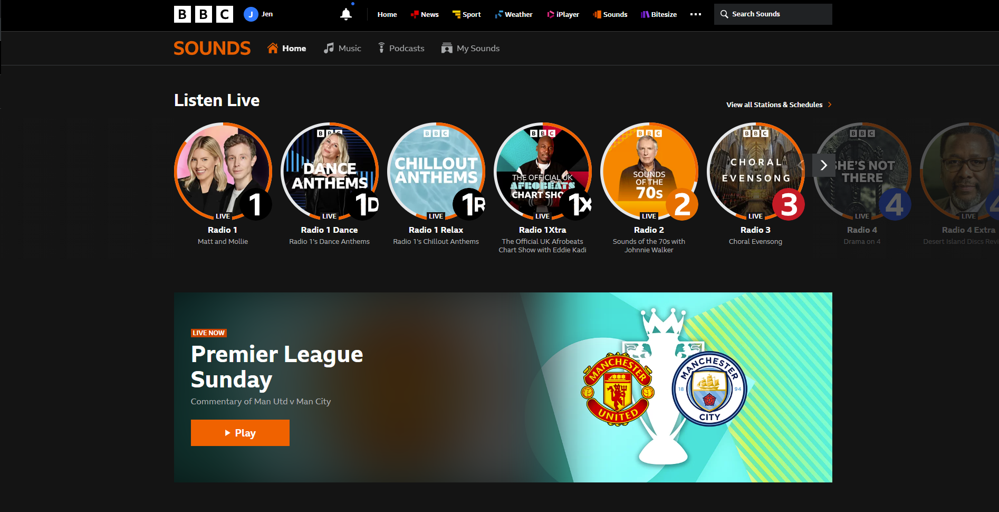

Senior Software Engineer with over 8 years of professional web Javascript / Typescript experience and over 5 years of React experience. Skilled at CSS animation, UI and front end development. Expert in web accessibility. Experienced in AWS, node and backend technologies. Thrives when collaborating and mentoring. Proven experience leading on projects.
Experience
Microsoft Rare - Sea of Thieves
Senior UI Developer - June 2022 - Dec 2023 (Contract)
The slides below show interfaces and animations I directly created:


Sea of Thieves an online action-adventure game by Microsoft Rare.
Lead developer on multiple large new features using HTML, Typescript and CSS
Created accessible and performant in-game interfaces from Figma designs and design documents
Developed high-performance CSS animations
Liaised with multiple disciplines to create API data contracts between frontend and backend
Implemented accessibility enhancements and greatly improved narration and colour contrast
Carried out performance tests and profiling on different devices to meet strict requirements
Incorporated translations from 10+ different languages
Contributed to React tech investigations
Contributions:
BBC - Sounds Website
Senior Software Engineer - Sept 2020 - June 2022
-

- 
BBC Sounds is a streaming media and audio download service from the BBC that includes live radio broadcasts, audio on demand, and podcasts.
Full stack web developer using Javascript, Typescript, HTML, React, Redux, SASS, Node, AWS
Tech lead for numerous projects - responsible for technical design decisions, breaking down stakeholder requirements into tickets, liaising with designers and overseeing technical quality
Created high quality, performant, accessible React interfaces
Led CSS / web animation projects and investigations.
Accessibility lead for team - personally ensuring accessibility of BBC Sounds website, introducing new testing procedures and being point of contact for accessibility questions
Worked in sub team converting Sounds Web into a Single Page App
Contributions:
BBC - News, iPlayer & Sounds,
Software Engineer - 2016 - 2020
Rotated through 4 six month placements in BBC software teams:
BBC News Visual Journalism - Javascript, HTML, CSS, accessibility focus
BBC iPlayer Web - Javascript, React, HTML, CSS, AWS
BBC Sounds - Javascript, React, HTML, CSS, AWS
BBC News Data Systems - Java
Then secured a permanent role in BBC Sounds.
Then secured a permanent role in BBC Sounds.
Projects
Peckin' Pixels
Play Game!
Peckin' Pixels is a popular web game with over 3 million plays.
Solo created - Software engineering, art and game design.
Made using only vanilla Javascript, an HTML canvas and Photoshop.
Downloadable version made in Electron.
Presented at London Creative Coding meetup
Contributions:
PR Penguin
PR Penguin is an internal tool used by hundreds of BBC developers.
Created using an Amazon Web Service Lambda.
Written in Javascript.
It is a Slack Bot which allows BBC developers to create formatted Github pull requested messages.
Buttons in the message can be selected by any user to update the status of the review.
Rolled out to entire BBC developer community.